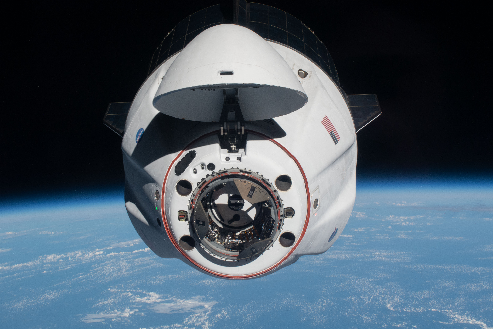

Space Exploration Technologies Corp., conocida como SpaceX, es una empresa estadounidense de
fabricación aeroespacial y de servicios de transporte espacial con sede en Hawthorne (California). Fue
fundada en 2002 por Elon Musk con el objetivo de reducir los costes de viajar al espacio para facilitar la
colonización de Marte.
STARSHIP
Es un sistema de lanzamiento y nave espacial totalmente reutilizable desarrollado por SpaceX como
proyecto de vuelo espacial privado. Fue diseñado para permitir el transporte de carga y pasajeros
hacia la órbita terrestre, la Luna, Marte y más allá. La nave (nombrada como Starship) se usará en
lanzamientos orbitales en conjunto con una primera etapa, el propulsor Super Heavy, por lo que servirá
como un vehículo de lanzamiento de dos etapas a órbita. A la combinación de nave espacial (2ª etapa) y
propulsor (1ª etapa) también se le llama Starship.
La gran carga útil esperada de hasta 150.000
kg lo
convertiría en un vehículo de lanzamiento superpesado. Starship pretende ser el cohete más poderoso en
la historia, y el primer cohete orbital 100% reutilizable.
DRAGON

La SpaceX Dragon, también conocida como Dragon 1 o Cargo Dragon, fue una clase de nave espacial
reutilizable de carga desarrollada por SpaceX, una empresa de transporte espacial estadounidense. La
Dragon era lanzada a bordo del cohete Falcon 9 de la compañía para reabastecer a la Estación Espacial
Internacional (ISS). Posteriormente fue sustituida por la SpaceX Dragon 2.
Durante su vuelo inaugural en diciembre de 2010, la Dragon se convirtió en la primera nave comercial en
ser recuperada con éxito. El 25 de mayo de 2012, se convirtió en la primera nave comercial en atracar en
la ISS.
SpaceX tiene un contrato para llevar carga a la estación bajo el programa de la NASA
Servicios Comerciales de Transporte Orbital y la Dragon comenzó a realizar viajes regulares a partir de
octubre de 2012.¿ Mediante la Dragon y la Cygnus la NASA pretende aumentar sus asociaciones con
la industria espacial comercial.
La gran carga útil esperada de hasta 150.000
kg lo convertiría en un vehículo de lanzamiento superpesado. Starship pretende ser el cohete más
poderoso en
la historia, y el primer cohete orbital 100% reutilizable.
FALCON9
El Falcon 9 (español: "halcón," a nueve motores) es un vehículo de lanzamiento parcialmente reutilizable
de dos etapas diseñado y fabricado por SpaceX. Usa como propelentes queroseno para cohetes (RP-1)
densificado y oxígeno líquido (LOX). Su versión actual, el Falcon 9 Block 5, tiene una carga útil
aproximada de 22.800 kg a órbita baja terrestre y de aproximadamente 8.300 kg a órbita de transferencia
geosíncrona. La primera etapa es capaz de aterrizar para ser reutilizada en nuevas misiones, ya sea
volviendo a tierra o sobre una nave dron.